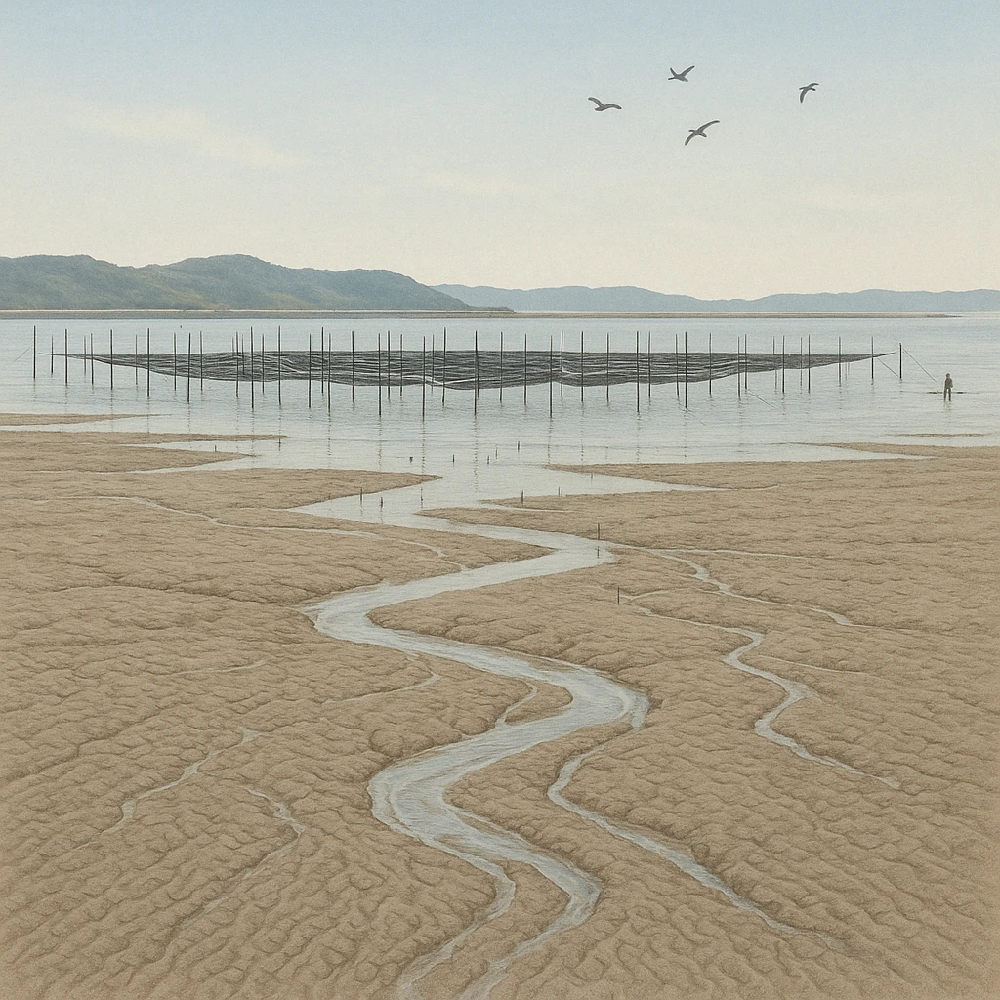

ノート2
農業②・水産業
福岡・佐賀・長崎・熊本
有明海
干潟が広がる、
日本一の干満差
の海。
筑後川が土砂を運びこむ。

③＝海をしめ切って農地にする
新しい農地
堤防でしめ切る
海
水をぬいて陸地に → 農地が広がる
③
古くから
干拓
を行い農地を広げる
遠浅の海をしめ切って水をぬき、耕地にする
④
また
のり
の養殖も盛ん
この養殖の生産量は佐賀県が全国第1位
養殖の生産量 2022年
佐賀 23.4%
兵庫 21.6
福岡 17.0
その他
セットで覚える
この海は
①
＋
②の養殖
。この2つは必ずいっしょに出る。
第13章 九州地方
SEED EDUCATION